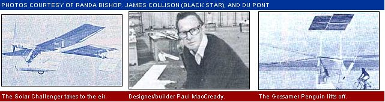

Advanced heavier-than-air flight... not at the speed of, but with the help of light!
You don't have to be an aviation buff to realize that the "Solar Challenger" pictured above-designed by Paul MacCready and sponsored by Du Pont-is likely as significant to the future of humankind as were the very earliest flying machines. Because, you see, what makes this particular bird so important is the fact that it's the first "conventional" aircraft to rely on sunlight alone to carry it aloft.
Although an earlier MacCready/Du Pont effort-which resulted in the 1.6-mile flight of the solar-powered "Gossamer Penguin"-was successful, that 55-pound craft was far too delicate to serve as anything more than a test-bed for ideas later used in the Challenger. The new machine, however, can truly be described as an airplane. With a total weight-including pilot and payload-of less than 275 pounds, the Mylar-skinned, Kevlar-reinforced vessel is capable of attaining altitudes of over 10,000 feet ... and can cruise at speeds of 30 to 40 miles per hour.
The plane is powered, of course, by photovoltaic cells ( 15,000 of them ), which are mounted on the upper surface of the 47-foot-wide wings and on top of the horizontal rear stabilizer. The 240-odd square feet of electricity-producing disks can manufacture 2,700 watts of power under the best conditions ... and, after losses in the motor and speed reduction system are accounted for, supply the craft's variable-pitch propeller with about 2.7 HP.
Unlike some other photovoltaic-equipped lightweight airplanes, the Solar Challenger uses no batteries whatsoever ... and is truly a directly sunpowered craft. And even if unexpected cloud cover should interfere with the Challenger's in-flight "fuel supply", the glider-like machine can safely coast to an appropriate landing spot on the ground below.
To date-other than in nono fficial test flights-the Challenger's pilot, Janice Brown, has taken the craft only to about 1,000 feet for distances of up to six miles. But both MacCready and his sponsors have their sights set on a 100-milejaunt scheduled for sometime in the spring ... and from there, who's to say what could happen?
|
 |
|
|